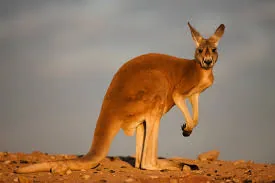
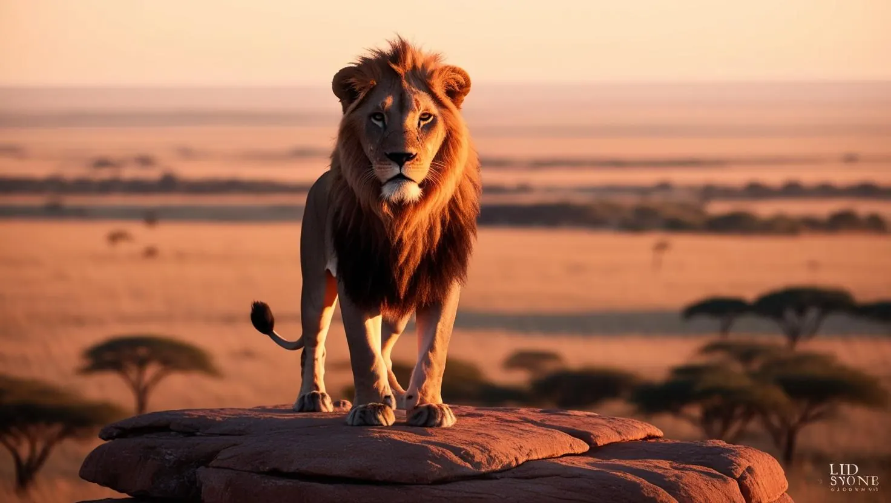
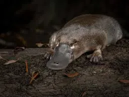
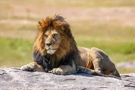
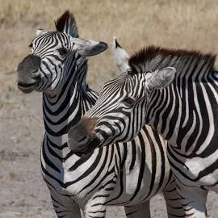
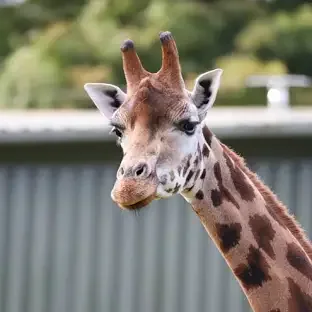
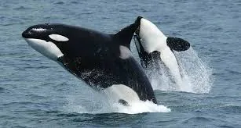
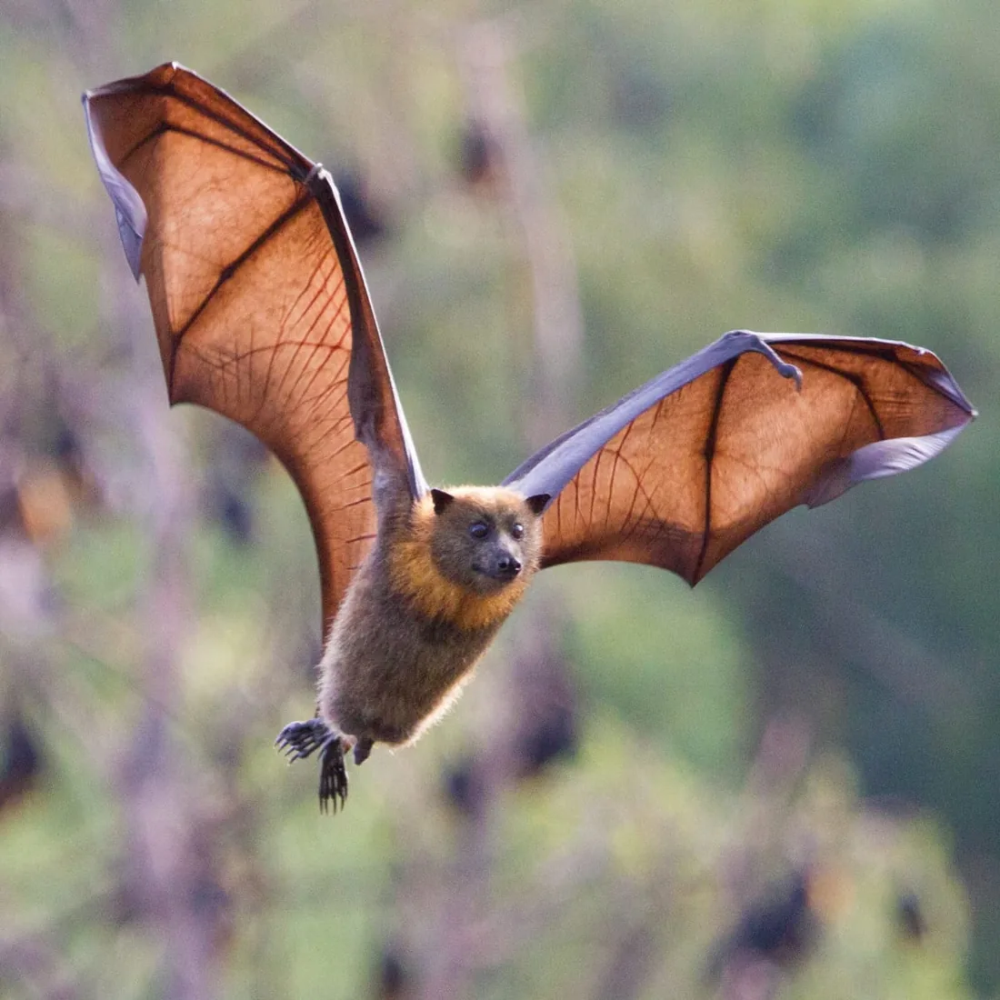

Mammals
Kangaroo
Macropus
Strong back legs and a sturdy tail make kangaroos built for hopping, grazing and getting away from danger.

From tiny bats to the giant whales of the open ocean, mammals live on every continent and in every sea. What they share: fur or hair, warm blood, and milk for their young.
Select “Learn more” on any card for habitat, diet and a fun fact.

Mammals
Macropus
Strong back legs and a sturdy tail make kangaroos built for hopping, grazing and getting away from danger.

Mammals
Ornithorhynchus anatinus
A mammal that lays eggs. The male has a sharp spur on each back heel that delivers venom.

Mammals
Panthera leo
Lions are the only big cats that live in groups. A group, called a pride, can have up to about 30 lions depending on the food and water available.

Mammals
Equus quagga
The black-and-white stripes help zebras recognise each other, and they may also confuse biting flies and predators.

Mammals
Giraffa
Giraffes can sprint at about 55 km/h over short distances, or cruise at about 16 km/h over longer ones.

Mammals
Cetacea
Whales are social, air-breathing mammals. They give birth to live young and feed their babies with their own milk.

Mammals
Chiroptera
Bats are the only mammals that can truly fly. Many use echolocation, calling out and listening to the echoes, to find their way at night.
All mammals feed their young milk, but they start life in different ways.